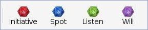
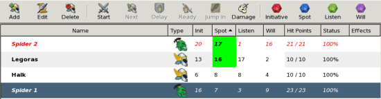
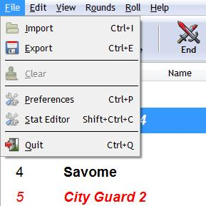
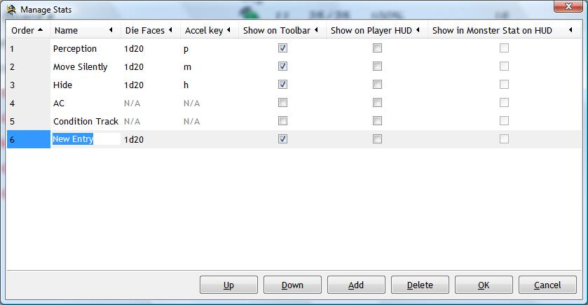
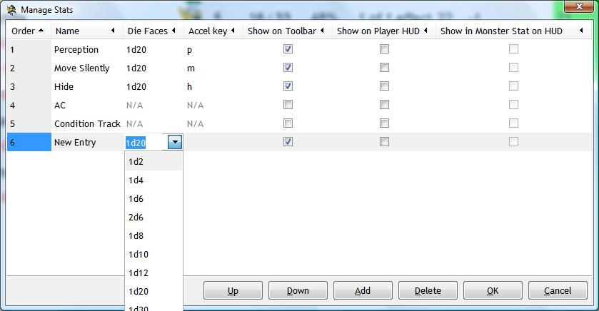
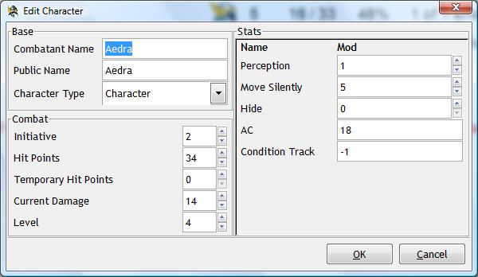

Making Secret Skill Checks
and Will Saves
Use Turn Watcher to quickly and secretly make separate die rolls
for each character by clicking on one of the colored dice icons on the
toolbar. The computer will automatically sort the players and monsters
on the appropriate column.

The party moves into a new chamber in the dungeon. Doug
wants to secretly roll each players' spot check to see if anyone notices a
hidden door in a room. He clicks the Spot button on the toolbar,
then clicks the Spot column to sort. The characters with the
highest Spot checks are listed first.
When in the
menu is turned on, each time
you make a secret check (Spot/Listen/Will), the computer will
prompt you for the success DC of the check. Those characters
and monsters that succeed will be highlighted with a green
background.
(available since version 1.1)

Customize your secret skill and save checks! Tired of only having
Spot/Listen/Will fixed column checks? Now you can add your own checks and
add informative columns! Access the File menu, and you will see a new menu
entry called "Stat Editor".
(available since version 1.4)

The Stat Editor window allows you to create your own secret checks
and information columns in the main screen. Turn Watcher comes stock
with predefined Spot/Listen/Will columns, but you can change those to
your liking. To rename a column, merely click once on a row and then click a
second time on the column name. You may then type the new value then press
the ENTER button to accept.
(available since version 1.4)

For alternative gaming systems that are not d20-based, you may click the on
the Die Faces column and select a new dice value to use (e.g. 2d10+6).

The Show on Toolbar checkbox creates a button on the toolbar which
will, when clicked, make a secret roll for the GM's eyes only. For example,
the GM wants the players to make perception checks, so clicks the perception
button. After entering the success DC, a new column on the UI appears,
called Perception, and the succeeding checks are highlighted:
(available since version 1.4)

However, if you un-check the Show on Toolbar checkbox, your entry will appear
in the main screen. The difference is: the entry always appears and
contains any text you wish to enter. For example, if you now want Turn
Watcher to show combatants' Armor Class, you may create a column
called AC.
(available since version 1.4)

The Show on Player HUD allows you to insert this new field into the
player HUD for viewing by the players. The Show in Monster Stat on
HUD will cause the stat to also show for monster entries. Uncheck to
keep the value hidden from the players.
(available since version 1.4)
|